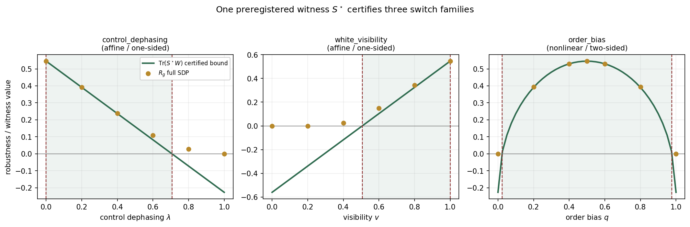
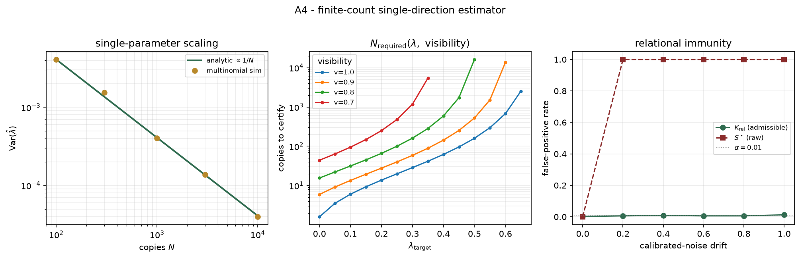
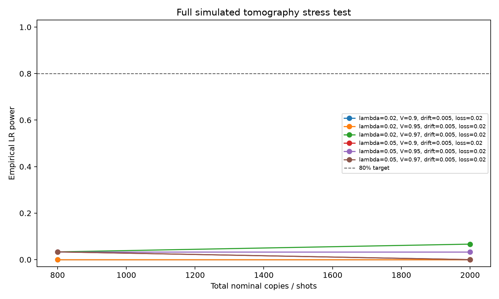

Process-matrix SDP validation
Quantum-switch robustness, mapped beyond one benchmark point.
The repository reproduces the published ideal-switch generalized robustness and extends it with sampled SDP landscapes under control dephasing, white-noise visibility, coherent order bias, and a finite-count tomography stress pipeline with realistic noise knobs.
Ideal switch
Rg = 0.545351
Reference: 0.5454
Error: 4.9e-5
Fixed witness: E3+
Benchmark layer
Published value reproduced
Ideal quantum switch, SCS at tight tolerance.
Against the published 0.5454 reference.
Negative control is causally separable.
Passing tests with 96.45% coverage locally.
Repository landscape artifacts
Loading the SDP landscape data served with this GitHub Pages site.
| Family | Parameter | R_g | Dual gap | Residual |
|---|---|---|---|---|
| Data will load from site/data/switch_robustness_landscape.json. | ||||
Certified witness layer
One preregistered scalar across three switch families
The dual-optimal witness S* is extracted once at the ideal switch and reused as a fixed certified lower bound across dephasing, white-noise visibility, and coherent order bias. This is E3+: mathematical certification on the physical switch, not an experimental claim.
Dual witness tight at the ideal switch benchmark.
Control dephasing, white visibility, and order bias.
Single-scalar inversion is exact for convex mixtures.
Verified against full SDP grids in the installed artifact.
Certified nonseparable regions
Loading the certified witness landscape data served with this GitHub Pages site.
The order-bias family is intentionally reported as nonlinear and two-sided: the same scalar measures order-coherence magnitude but does not identify which order dominates.
{kind=link}

| Family | Type | Certified region | Reference value | Bound checks |
|---|---|---|---|---|
| Data will load from site/data/certified_witness/certified_witness_landscape.json. | ||||
Finite-count certificate
One scalar, quantified under shot-noise and certified bounds
The A4/A5 layer turns the fixed witness into a finite-count scalar estimator and a numerical primal/dual robustness interval. It is deliberately narrower than full tomography: one preregistered direction, explicit false-positive stress, and solver diagnostics.
Against 4096 process matrix entries.
Multinomial simulation agrees with the analytic shot-noise law.
Under calibrated nuisance drift at alpha = 1%.
Primal/dual numerical bracket for the ideal switch.
Single-direction statistics
Loading the finite-count witness report served with this GitHub Pages site.
Loading the certified primal/dual interval report.
{kind=link}

| Solver | Available | Status | Lower | Upper | Width |
|---|---|---|---|---|---|
| Data will load from site/data/certified_witness/certified_bounds_report.json. | |||||
Advanced numerical validation
End-to-end tomography under finite counts and realistic noise
Current status: the SDP causal layer is fully validated on the ideal switch. This simulated layer stress-tests the experimental chain W0 -> tomography counts -> reconstruction -> covariance shrinkage -> bootstrap -> lambda_hat -> empirical LR diagnostics.
lambda, copy budget, and visibility combinations.
Nominal total copies in the Pages smoke artifact.
All Pages smoke points pass the preregistered gates.
Miscalibrated null with drift, crosstalk, and loss.
Ready-for-experiment diagnostics
Loading the finite-count tomography stress-test data served with this GitHub Pages site.
This light public artifact is intentionally a reproducible smoke run, not the final sensitivity claim. It already exercises visibility 0.90-0.97, 1% control and operation crosstalk, 0.5% temporal drift, 2% path-dependent loss, interleaved controls, shrinkage covariance, and bootstrap uncertainty.
Next numerical milestone: run the same script at 10k-50k Monte Carlo draws and larger copy budgets to release the lambda_sens surface where empirical LR power crosses 80%.
{kind=link}

| lambda | N copies | Visibility | Power | False positive | lambda_hat mean | Applicable |
|---|---|---|---|---|---|---|
| Data will load from site/data/full_tomography/full_tomography_report.json. | ||||||
External public data pilot
Cao 2023 semi-DI quantum-switch counts verified from a public file
The repository now includes one real public-data ingestion check: the Cao et al. Optica 2023 semi-device-independent quantum-switch file. It verifies experimental counts and reproduces the published inequality value. This is external experimental evidence for that semi-DI inequality, not yet a DeltaW/K_rel process-matrix tomography reanalysis.
Experimental outcomes from the authors' public MATLAB file.
Recomputed from alpha_abcxyz and p_experiment.
The raw public file is checked before analysis.
Counts are not a full process-matrix tomography dataset.
Falsification landscape
Robustness across perturbation families
Control dephasing
lambda: coherent to classical| lambda | R_g | dual gap |
|---|---|---|
| 0.00 | 0.545351 | 5.3e-10 |
| 0.25 | 0.352626 | 1.3e-09 |
| 0.50 | 0.167483 | 2.0e-10 |
| 1.00 | 0.000000 | 7.5e-10 |
White visibility
v: white noise to ideal switchOrder bias
q: fixed order to balanced switchEvidence architecture
What the repository claims
E3: SDP benchmark and landscapes
The ideal switch, dephased negative control, and perturbation families are solved as semidefinite programs with residual and dual-witness diagnostics.
E2: Process-matrix infrastructure
Trace-replace maps, fixed-order projectors, and causally separable controls are executable and tested.
E2: Tomography bridge
Finite-count simulated tomography now covers multinomial/Poisson counts, linear or MLE reconstruction, shrinkage covariance, bootstrap uncertainty, and power maps.
E2+: Full stress test
The full simulated run adds path-dependent losses, dephasing, crosstalk, temporal drift, interleaved controls, empirical LR thresholds, and an applicability map.
E1: Exploratory controls
Monte Carlo and micro-tomography scripts are methodological smoke tests, not final experimental evidence.
External data status
One public semi-DI count file from Cao et al. 2023 is verified as an external-data pilot. No full DeltaW/K_rel laboratory reanalysis is claimed on this page.
Ultimate roadmap
From benchmark repository to reference falsification protocol
The long-horizon goal is not a larger toy model. It is a preregistered, reproducible, experiment-facing protocol for testing causal or relational signatures with explicit negative controls and no post-hoc witness tuning.
Unbreakable foundation
Keep SDP benchmarks, realistic tomography smoke artifacts, manifest validation, claim/evidence mapping, and Pages results synchronized for submission.
Advanced proof of concept
Run release-scale 10k-50k tomography maps, add compressed-sensing and Bayesian reconstruction comparisons, and publish interactive power/applicability dashboards.
Experimental design
Convert the simulator into one concrete optical or superconducting proposal with shot budget, calibration cadence, preregistration, and public-data exploratory analyses.
Community platform
Stabilize the package API, curate an ICO benchmark database, and build tutorial material around falsifiable causal and relational tests.
Guardrail
The roadmap is an ambition tracker, not current evidence. Only claims mapped in the claim/evidence matrix should be promoted in the manuscript.
Repo doc
docs/ULTIMATE_VISION_ROADMAP.md
Reproducibility
Commands
python -m pip install -e .
pytest -q
python scripts/run_sdp_validation.py
python scripts/run_switch_dephasing_scan.py --lambdas 0,0.25,0.5,0.65,0.7,0.75,1
python scripts/run_switch_robustness_landscape.py
python scripts/run_certified_witness_landscape.py
python scripts/run_certified_bounds.py
python scripts/run_finite_count_analysis.py
python scripts/ingest_external_cao2023_sdi.py
python scripts/realistic_tomography_pipeline.py --outdir results/realistic_tomography_smoke
python scripts/full_realistic_tomography.py --outdir results/full_tomography_smoke
python scripts/validate_manifest.py